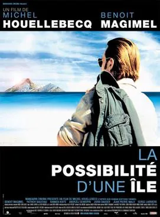

The genetics
Cloning is the means by which the film's cult pursues immortality. Michel Houellebecq adapts his own novel: the Prophet's followers believe in extraterrestrial creators and fund a geneticist, Professor Miskiewicz, to perfect a technique that makes an adult copy of a person in minutes, memories included. Thousands of years later, the result is a line of 'neo-humans' who live in isolation and have lost the capacity for love; the clone Daniel25 rediscovers a hint of it only through a dog. The film thus presents cloning-based immortality as a religious promise that ends in a lonely, emotionally barren existence, though the sources say little about how it portrays the geneticist himself. Real cloning cannot make an adult copy or transfer memories; a clone is a genetic twin who starts life as a baby.
How genetics is portrayed
- Overall portrayal of genetics
- negative Cloning-based immortality is a sect's promise that leads to a bleak, emotionally empty future; the film's sympathy goes to the clone's longing for love, not to the project.
- Outcome of the genetic intervention
- negative The cloning succeeds in perpetuating Daniel for thousands of years, but the neo-humans it produces live isolated lives and have lost the capacity for love.
- The Elohimite sect (the Prophet and Professor Slotan Miskiewicz)
- ambivalent Aim: ideological, power (negative). The Prophet's sect, believing in extraterrestrial bringers of eternal life, recruits the geneticist Miskiewicz to develop adult cloning with memory transfer so that its members can live forever. The sources do not say how the film stages them, but the clone line they found ends in a desolate, loveless future.
The story
A man calling himself 'the Prophet' tours Belgium lecturing on eternal life and on overcoming death through technical progress, accompanied only by his unenthusiastic son Daniel and a technician. Three years later he has many followers. His sect, the Elohimites, believes in the Elohim, extraterrestrials who will bring eternal life, and it recruits a prominent geneticist, Professor Slotan Miskiewicz, to develop a cloning technique that reproduces an adult person within minutes, complete with their memories. Daniel leaves the cult but returns years later to succeed his father. Thousands of years on, Daniel reappears as Daniel25, the latest of a line of clones called neo-humans. Living alone in a cave, he reads about humanity's past until a vague longing sends him out across a desolate world. A dog becomes his companion and brings him close to love, which the neo-humans have lost, while another clone, Marie, wanders the same wasteland.